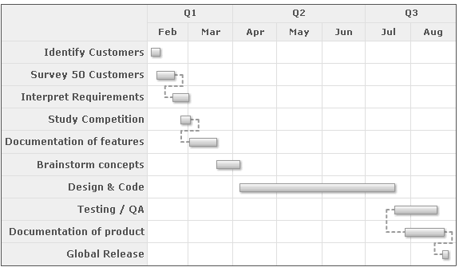

Gantt Chart > Connectors |
FusionWidgets Gantt chart allows you draw connectors between any two tasks on the chart to indicate process flow. Here, we'll see how to create the same. |
| How to create? |
To draw a connector, all you need to do is specify the Id of the two tasks that you want to connect. Apart from this, you can also specify where the connector joins the start and end task bar individually – at their start or end. To show the connectors, we'll revert to our example of "Gantt Project Schedule" chart and connect a few tasks in the following ways:
Shown below is the final output: |
|  |
| The XML for the same can be listed as under: |
<chart dateFormat='mm/dd/yyyy' caption='Project Gantt' subCaption='From 1st Feb 2007 - 31st Aug 2007'> |
Here, we've:
FusionWidgets allows you select whether to connect the start or end of each task bar using fromTaskConnectStart, fromTaskConnectEnd, toTaskConnectStart and toTaskConnectEnd attributes for each <connector> element. For example, if you wanted to connect the ends of both bars, you could set: <connector ... fromTaskConnectEnd='1' toTaskConnectEnd='1' ..> |